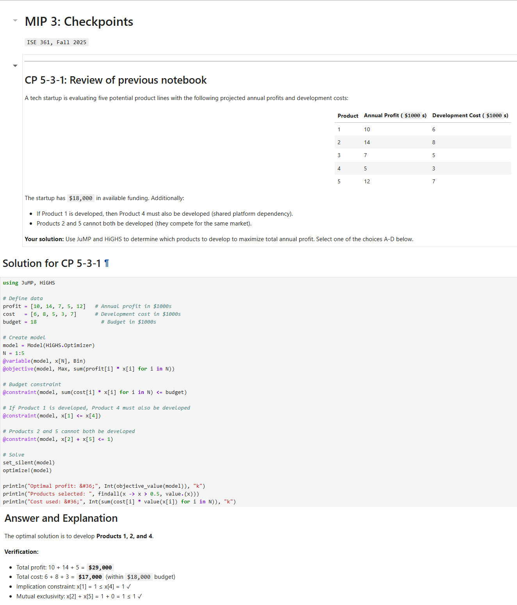
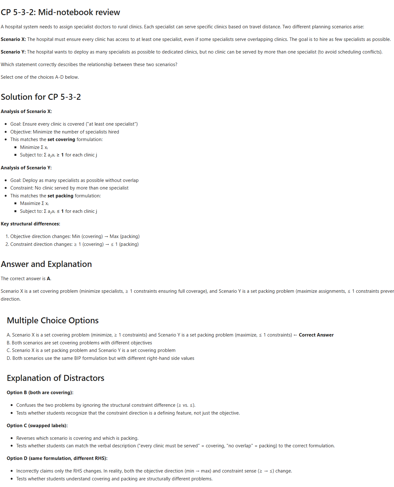
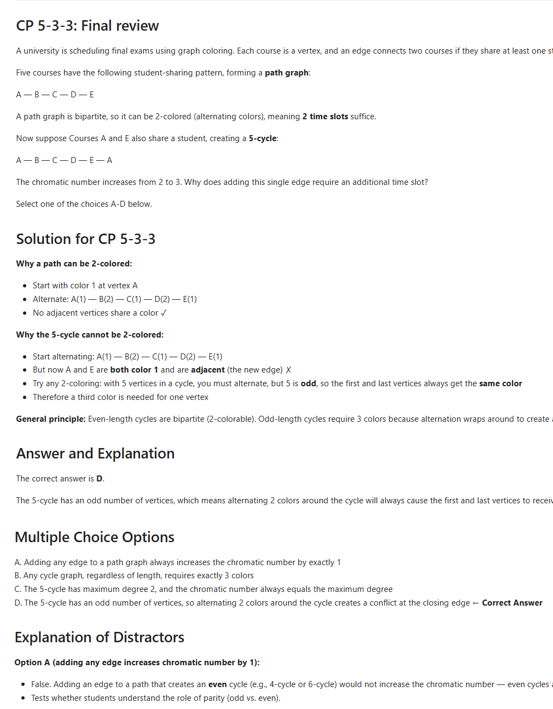
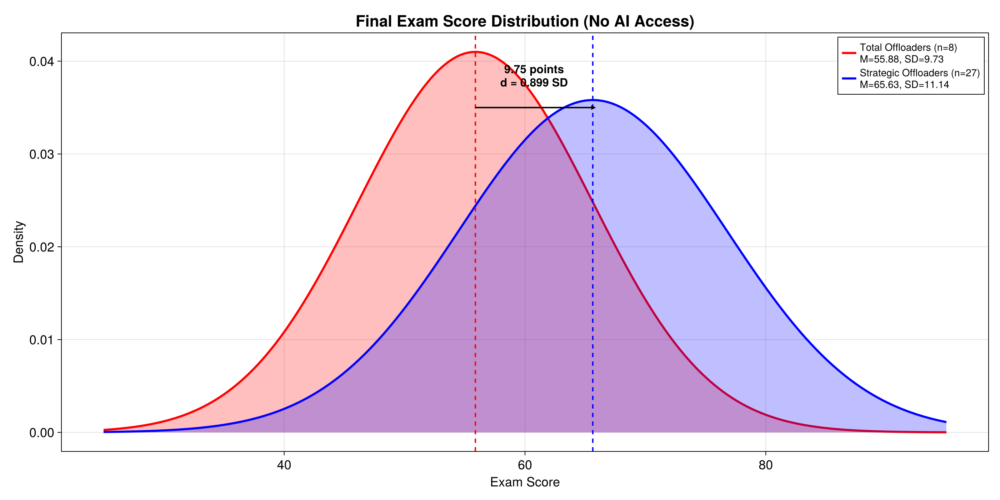
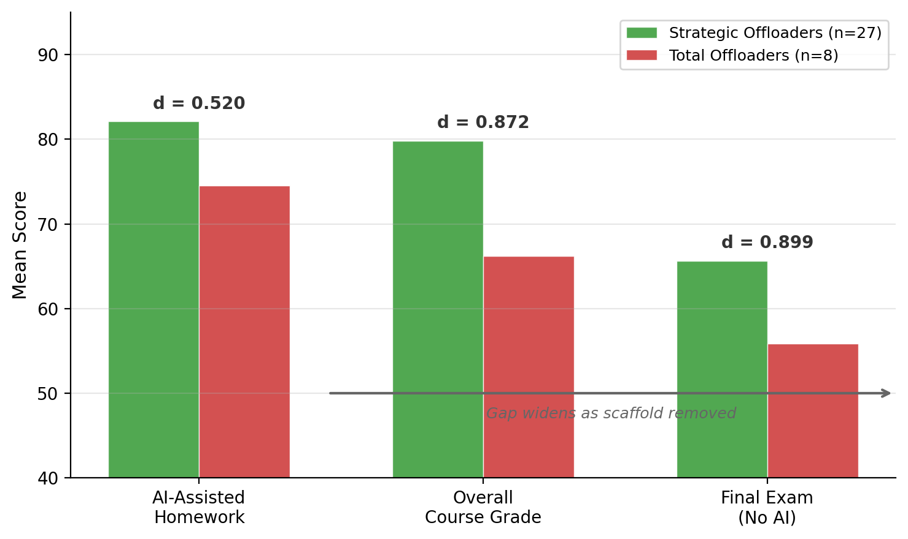
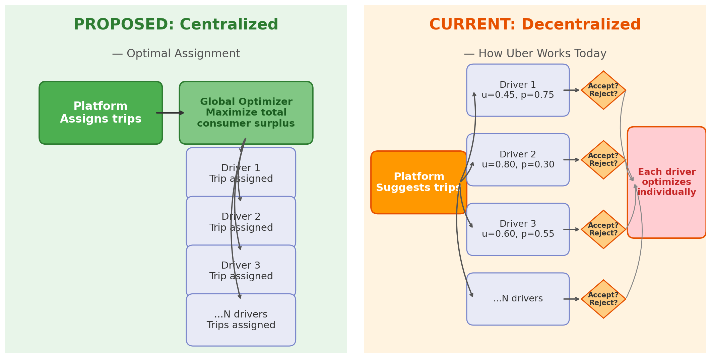
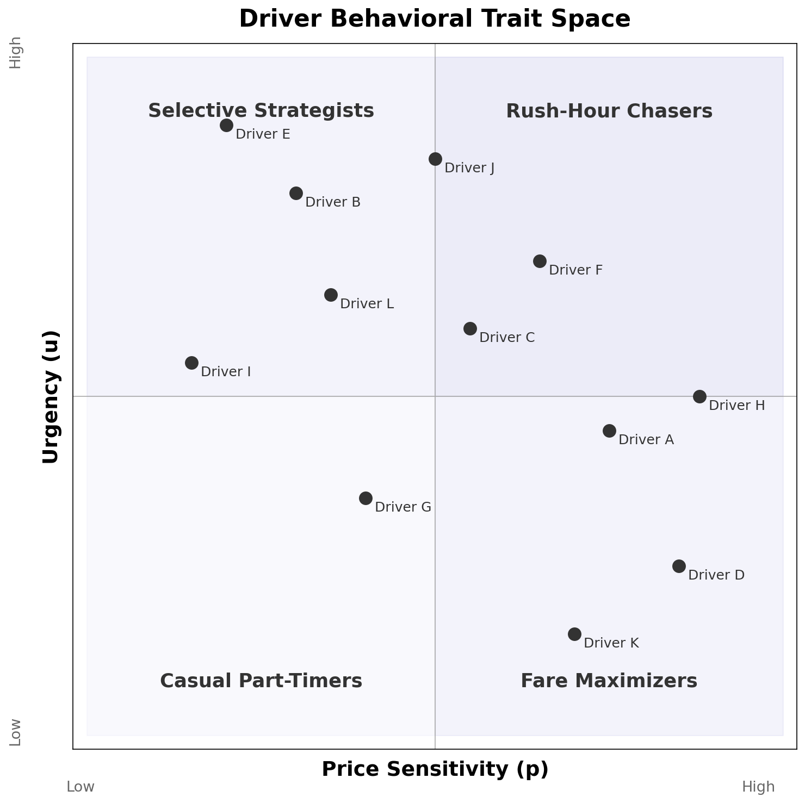
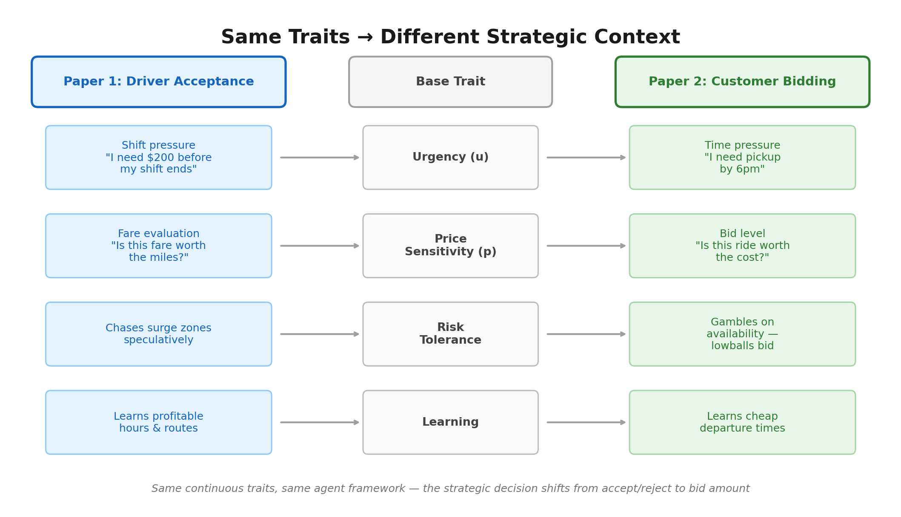

flowchart LR
C["`**Context Window**
*(tokens)*`"] --> L["`**LLM**`"]
L --> P["`**Predict
Next Token**`"]
P -->|"append"| C
When AI Becomes a Learning Partner
New Research on Student Success
Michael G. Kay
NC State University, ISE
Jake Benhart
NC State University, OR (PhD)
2026-02-26
Roadmap
Three-part structure:
1 Evolution
How we got here (Pre-2022 → Fall 2025)
2 Research Results
What we found (n = 35, Fall 2025)
3 The Future
Where this is going (PCV, agentic economy)
The Engine of AI: Utter Simplicity at Scale
Next-Token Prediction
Context Window
▌
One small step for man, one giant ▌
One small step for man, one giant leap ▌
One small step for man, one giant leap for ▌
One small step for man, one giant leap for mankind.
That’s it. Predict the next token. Repeat.
A token \(\approx\) ¾ of a word. Context window = LLM’s working memory — a finite bucket of tokens.
Why It Works
Self-verification at scale
Text contains its own test suite — hide the next word, guess it, check.
The breakthrough wasn’t better algorithms; it was more compute applied to this simple game. — Sutton’s “Bitter Lesson”
Part 1: Evolution
How we got here
The Verification Era
LLMs self-verify by predicting text. In practice, the scarce human skill is verifying AI output matches intent:
“AI is not end-to-end but middle-to-middle.” — Balaji
“You’re not going to lose your job to AI but to someone who uses AI better than you.” — Jensen Huang
“How good you are at the thing you’re best at determines how powerful an LLM you can reasonably evaluate.” — Byrne Hobart
New Modeling Workflow
%%{init: {'theme': 'base', 'themeVariables': {'fontSize': '14px', 'primaryColor': '#fff', 'primaryBorderColor': '#CC0000', 'lineColor': '#CC0000'}}}%%
flowchart LR
W["`**What & Why**
*Human*`"] -->|"prompt"| H["`**How**
*LLM*`"]
H -->|"output"| V["`**Verify**
*Human*`"]
V -->|"refine"| W
Scarce skill is now verification, not production.
Human (what/why) → LLM (how) → Human (verify)
The Syntax Barrier (Pre-2022)
Julia — modern, high-performance, ideal for computational logistics — but steep learning curve created classroom barriers:
- Students drowned in syntax errors instead of system design
- Cognitive load spent getting code to run, not modeling
- Workaround: MATLAB instead of Julia to keep courses manageable
- Sacrificed exposure to modern tools for teachability
timeline
Pre-2022 : Syntax barrier
: Students struggle with Julia
Nov 2022 : ChatGPT arrives
: Solves basic syntax homework
Fall 2024 : Turning point
: Custom GPT + Julia manual
Fall 2025 : Course redesign
: Two new AI-integrated elements
First Contact with AI (2022–2023)
Fall 2022 — PhD-level Logistics Engineering course, taught in MATLAB. ChatGPT launched in November — solved basic syntax homework flawlessly but hallucinated on complex design problems.
Fall 2023 — Undergraduate supply chain course, Python. AI offered as optional tool with extra credit for documenting use:
- Helpful for debugging and conceptual queries
- Still weak at quantitative coding and optimization modeling
- No threat to design-level work yet
Gap between syntax help and design help was still enormous.
The Turning Point (Fall 2024)
Same PhD-level Logistics Engineering course from 2022 — but this time, switched from MATLAB to Julia:
- Created Custom GPT loaded with 1,000-page Julia manual
- Overcame context limits standard chatbots couldn’t handle
- By December: standard chatbots had caught up natively
Path cleared to focus entirely on design, not Julia syntax.
Fall 2025: Two Innovations
ISE 361 — Engineering Optimization · NC State · Fall 2025
~40 undergraduates · Julia/JuMP · Jupyter notebooks
Two new design elements:
1 AI-Generated Checkpoints
2 Two-Stage Homework
AI-Generated Checkpoints
Checkpoint pipeline:
Input
Professor’s Jupyter lecture notebook
(e.g., 5-MIP-3.ipynb)
Process
Claude Code reads notes → generates 3 multiple-choice checkpoints (1–4 min each) → distractor analysis
Output
- Student version: questions embedded
- Instructor answer key: solutions + distractor explanations
CP1 reviews previous class · CP2 & CP3 test current session
Strategic distractors expose specific misconceptions, not just wrong answers.
Checkpoint Demo
Checkpoint Output
Three checkpoints generated from one lecture notebook:
CP1 — Previous Class Review

CP2 — Mid-Notebook Review

CP3 — End-of-Class

Two-Stage Homework
Stage 1 (50%) — Independent submission
Solve without AI on solution steps.
Diagnostic moment
After submission, receive answers only — numerical results, no solution code.
Stage 2 (50%) — AI-assisted reconciliation
Resolve discrepancies, submit final version + AI transcript.
Creates a natural, honest prompt:
“I got X, but the answer is Y — help me understand where my approach diverged.”
Submission requires AI dialogue log — making process, not just product, visible.
Part 2: Research Results
What we found (Fall 2025)
Two Patterns of AI Use
Framework: cognitive offloading (Risko & Gilbert)
77% Strategic Offloading (n = 27)
Attempt first → debug → ask why → verify
23% Total Offloading (n = 8)
Paste raw problem → demand answer → complain when wrong
n = 35 students submitted AI transcripts (87.5% of class)
A time capsule — capturing how students naturally interact with AI in Fall 2025, before norms, guardrails, and institutional policies solidify.
Example - HW 5 Offloading
S012 — Total Offloader · 54/100
“this is the correct answer give me code that will produce this”
Platform: Google Gemini · 19 messages
| Category | Count |
|---|---|
| Conceptual questions | 0 |
| Own code attempts | 1 |
| Raw error pastes | 8 |
| Fix this / demand answer | 10 |
| Verification behaviors | 0 |
S024 — Strategic Offloader · 94/100
“Looking at this code from the original problem… and my code… How can I improve mine”
Platform: ChatGPT · 15 messages
| Category | Count |
|---|---|
| Conceptual questions | 2 |
| Own code attempts | 4 |
| Raw error pastes | 5 |
| Fix this / demand answer | 5 |
| Verification behaviors | 4 |
Messages may fall into multiple categories.
+40 points · same assignment · same AI access · same two-stage format
Example — Undergraduate Deterministic Modeling Course

65.63 Strategic Offloaders (n = 27) — Final Exam Mean
55.88 Total Offloaders (n = 8) — Final Exam Mean
Cohen’s d = 0.899 · p = 0.033 · η² = 0.131
- 9.75-point gap on final exam — nearly one full standard deviation
- AI interaction quality explained 13% of exam variance vs. <1% for checkpoints
- 65.2% of students improved verification behaviors over semester
Scaffold, Not Crutch
Effect size increases as AI scaffolding is removed:

- AI-assisted homework: d = 0.520
- Course grade: d = 0.872
- AI-unassisted final exam: d = 0.899
- Gap widens on assessments without AI
Verification behaviors — moments a student pushes back, checks, questions, or tests AI output:
- Explicit verification — “Why does this approach work?”
- Error refinement — “That’s wrong because…”
- Testing & debugging — running AI code, checking against known answers
- Metacognitive prompts — “What assumptions does this make?”
Early semester: 14.8% of messages (~1 in 7)
Late semester: 20.3% of messages (~1 in 5)
Students improved these behaviors over the semester
Part 3: The Future
Where this is going
Why AI Works for Code
- Recall: LLMs learn by self-verification — hide next token, predict, check
- Software already had this structure before AI arrived:
- Unit tests (individual functions)
- Integration tests (functions together)
- Smoke tests (does it run at all?)
- AI iterates autonomously against this infrastructure
The Ralph Wiggum Loop — “I’m learnding!” —
Repeated cycles converging on a correct result despite not understanding why
Repeated cycles converging on a correct result despite not understanding why
flowchart LR
H(["`**Human**
*prompt + test suite*`"]) --> G
subgraph RW [" "]
G["`**Generate**
*code*`"] --> T{"`**Test**`"}
T -->|"fail"| R["`**Revise**`"]
R --> G
end
T -->|"pass"| V(["`**Human
Verifies**`"])
style RW fill:#f2f2f2,stroke:#CC0000,stroke-width:2px
Human provides test suite and initial prompt. Software was first domain where external verification matched self-verification LLMs were trained on.
The AI Tool Spectrum
Chatbot
flowchart TD
H([Human]) -->|"prompt"| A([AI])
A -->|"response"| H
The Prompter
All interaction is human-initiated.
AI Coding Agent
(e.g., Claude Code)
flowchart TD
H([Human]) -->|"prompt + tests"| A([AI])
A -->|"execute"| T{Tests}
T -->|"fail"| A
T -->|"pass"| H
The Manager
Human provides prompt + tests. AI loops until tests pass.
Autonomous Agent
flowchart TD
H([Human]) -->|"sets rules"| P[Protocol]
P -->|"governs"| A1([Agent A])
P -->|"governs"| A2([Agent B])
A1 <-->|"interact"| A2
A1 -->|"outcomes"| H
E["`**Environment**
*(APIs, sensors, data)*`"] <-->|"read/act"| A1
E <-->|"read/act"| A2
The Rule-Maker
Human defines protocol. Agents interact with each other and environment.
From Push to Pull
Traditional: Push
flowchart TD
I([Instructor]) -->|"broadcasts"| S1([Student])
I -->|"broadcasts"| S2([Student])
I -->|"broadcasts"| S3([Student])
- One-directional flow
- Scales easily but engagement varies
AI-Mediated: Pull
flowchart BT
AI[AI Partner] <-->|"handles 'how'"| S1([Student])
AI <--> S2([Student])
AI <--> S3([Student])
S1 -.->|"pulls 'why'"| I([Instructor])
S2 -.-> I
S3 -.-> I
- Students iterate with AI on how
- Pull why from instructor on demand
- Previously only feasible in apprenticeships and small seminars
- AI enables Socratic method at scale
The PCV Workflow
Structured approach to pull-based learning using Claude Code:
Plan Design questions + Critic review
Construct Build from approved plan
Verify Check against criteria
%%{init: {'theme': 'default', 'themeVariables': {'fontSize': '13px'}}}%%
flowchart LR
AI["`**AI**
*design questions*`"] <-->|"Q & A"| ST(["`**Student**
*answers trade-offs*`"])
AI -->|"produces"| PL["`**Plan**`"]
PL --> CR{"`**Critic**`"}
CR -->|"challenges"| AI
CR -->|"passes"| SA(["`**Student**
*approves*`"])
SA --> C["`**Construct**
*AI builds*`"]
C -->|"produces"| CD["`**Code / Model**`"]
CD --> V{"`**Verify**
*student checks*`"}
V -->|"fail"| C
V -->|"pass"| D["`**Decision Log**
*+ code*`"]
Link: mgkay.github.io/pcv
Every decision logged and reviewable — student can’t just paste and pray.
PCV in Action: The Charge & Plan
The Charge (Input)
Project: Widget-Production-Planner
Develop a mathematical formulation (objective function and constraints) for a multi-period production planning model. Factory produces 3 widget types over a 4-week horizon. Minimize total production and inventory holding costs while meeting weekly demand and not exceeding maximum machine hours.
Technology: LaTeX formulation; Julia/JuMP for implementation.
Success Criteria: Mathematically complete formulation — all decision variables defined, objective specified, all constraints enumerated — ready for implementation.
The Plan (Decision Log)
Questions student answered before any code was written:
| Question | Decision |
|---|---|
| Q1 (Cost structure): Linear only, or MILP with fixed setup? | MILP with setup triggers |
| Q5 (Inventory bounds): Maximum inventory constraint? | No upper bound; holding costs provide economic check |
PCV in Action: Construct & Verify
The Construct (Output)
MILP formulation produced after plan approval:
\[\min \sum_{i \in \mathcal{I}} \sum_{t \in \mathcal{T}} \bigl( c_i x_{it} + h_i I_{it} + f_i z_{it} \bigr)\]
subject to:
\[\begin{aligned} I_{it} &= I_{i,t-1} + x_{it} - d_{it} & \forall\, i,t \\ \sum_{i} a_i x_{it} &\leq H_t & \forall\, t \\ x_{it} &\leq M_i\, y_{it} & \forall\, i,t \\ z_{it} &\geq y_{it} - y_{i,t-1} & \forall\, i,\; t \geq 2 \\ x_{it} \geq 0,\; I_{it} &\geq 0,\; y_{it}, z_{it} \in \{0,1\} \end{aligned}\]
The Verify (Check)
Student verifies output against:
- Do costs match charge specification?
- Does solution satisfy all constraints?
- Do results make intuitive sense? (e.g., production timing vs. demand spikes)
Code generated only after plan passed adversarial review.
Full PCV cycle: Charge → Plan (decision log) → Construct (code/math) → Verify (student checks)
From Chatbots to Agents: Automating the Context
Chatbot (Slide 2 Revisited)
Human manually types to add tokens to context window.
flowchart LR
H([Human]) -->|"types"| C["`**Context
Window**`"]
C --> L["`**LLM**`"]
L -->|"response"| H
Context dies when browser tab closes.
Autonomous Agent
Agent manages its own context window — persistently adding and subtracting tokens from environment.
flowchart LR
C["`**Persistent
Context**`"] --> L["`**LLM**`"]
L --> A["`**Action**
*(Code / Tool)*`"]
A --> E["`**Environment**
*(Errors / Results)*`"]
E -->|"auto-feeds"| C
No human in loop. Environment drives context.
An agent is an LLM whose context window is managed by environment, not by a human typing. That’s the only structural difference.
The Agentic Economy
More Tokens
“My token usage jumped from 1 million to 100 million tokens a day in recent months because persistent agents on my machine are handling work that would have taken weeks.” — Rohit Krishnan
End of the “Human API”
“We had overestimated the value of ‘human relationships’. Turns out that a lot of what people called relationships was simply friction with a friendly face.” — Citrini Research
Intelligence premium shifts: From executing tasks to orchestrating systems.
Research: Paper One — Strategic Drivers
Today: Uber’s platform suggests trips, but each driver independently accepts or rejects based on own traits — urgency (u), price sensitivity (p), flexibility, risk tolerance. Pricing is decoupled (drivers don’t receive a set percentage of customer fare). Goal: recreate and validate Uber’s model using NYC and Chicago trip data to understand platform incentive structure.


Each driver modeled as heterogeneous learning agent with continuous traits (u, p, flexibility, risk tolerance), calibrated to NYC and Chicago data. Comparing decentralized to centralized assignment reveals how much value Uber captures from — or leaves on the table for — its drivers.
Role of AI: Claude Code finds and processes data sources, optimizes simulation performance, accelerates iteration — making dual-city calibration tractable for a single researcher.
Research: Paper Two — Strategic Customers
The future: Paper 1 models current system — human drivers with complex strategic behavior. Paper 2 models what’s coming — autonomous vehicles with no human driver, optimizing only for profit under fewer constraints. Remove driver strategy → customer becomes strategic actor.
Same behavioral traits from Paper 1 map directly onto customer bidding behavior:

Core question: What does ride-hailing’s future look like, and what is its societal impact? AI used throughout — Claude Code aids simulation development, and we are integrating a Model Context Protocol (MCP) server into bidding structure, letting AI agents interact with the economic mechanism in real time.
Research: Where This Is Going
Paper 3 — Education Research: Simulation models from Papers 1 & 2 become interactive teaching modules. Students interact with AI-simulated consulting scenarios built on ride-hailing models — every student has ridden in an Uber, making context immediately engaging.
Multi-year NSF study (3 years):
| Year | Focus |
|---|---|
| 1 | Pilot in ISE754 (graduate logistics, ~15 students) — Jake completes dissertation (Papers 1-3), build AI stakeholder simulations, measure consulting skill development |
| 2 | Expand to ISE453 (undergraduate supply chain) — extend modules to new courses, refine scenarios, publish findings |
| 3 | Portable toolkit — generalize modules for any engineering discipline, open-source tools and scenario templates |
My Prompt: “Can you find me a quote about AI in learning that takes a positive approach the concept but also finds a way of indicating that it has to do with how the learner approaches it?”
The Quote: “AI can be a powerful partner in learning, but what really matters is how the learner chooses to use it — as a shortcut around thinking, or as a tool to think more deeply.”
What This Means for Us
We can no longer train students to be processors of friction; we must train them to be engineers who orchestrate intelligence, not just apply it.
1. Assess process — Make AI transcript or PCV decision log part of grade. Require dialogue submission. Assess process, not just product.
2. Teach verification prompting — Train students to ask “why,” compare AI output to known answers, identify where model diverged from intent.
3. Use pull-based assignments — Two-stage homework, PCV workflow, or other designs that force engagement before AI assistance.
4. Start now — classroom is a safe harbor — Once students enter workforce, data security constraints limit experimentation. Academic environment is uniquely suited for learning to work with AI before stakes rise.
Questions & Contact
Michael G. Kay · Industrial & Systems Engineering · kay@ncsu.edu
Jake Benhart · Operations Research
NC State University
PCV Workflow: mgkay.github.io/pcv
Hosted by Pamukkale University Faculty of Engineering — thank you for the opportunity to speak.

AI in Education | NC State ISE | 2026-2-26